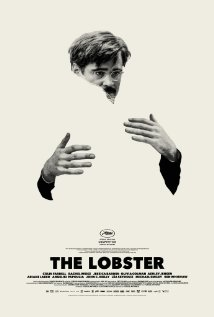
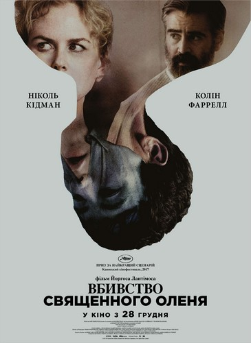

Фільмографія
Лобстер
«Лобстер» (англ. The Lobster) — науково-фантастичний романтичний фільм-трилер, написаний та знятий Йоргосом Лантімосом. Фільм розповідає оригінальну історію кохання, яка відбувається в антиутопічному недалекому майбутньому, де знайти партнера є питанням життя та смерті. У головних ролях — Колін Фаррелл та Рейчел Вайс. Світова прем'єра стрічки відбулась 15 травня 2015 року на Каннському кінофестивалі 2015, де картина була відзначена спеціальною згадкою Queer Palm та отримала «Приз журі», а в Україні — 11 липня 2015 року у секції «Фестиваль фестивалів» на Одеському міжнародному кінофестивалі 2015. Також фільм був обраний для показу у секції «Спеціальні покази» на міжнародному кінофестивалі у Торонто 2015.
Сюжет
Події фільму відбуваються в антиутопічному недалекому майбутньому. Відповідно до правил Міста після розлучення архітектор Девід потрапляє в готель для самотніх, у яких є 45 днів для того, щоб знайти собі гетеро- або гомосексуального партнера з числа інших постояльців. Тих, хто не досяг успіху, після закінчення зазначеного строку перетворюють у будь-яку вибрану тварину (Девід хоче стати лобстером) і відпускають в ліс. У лісі живуть Одинаки — ті, хто відкидає вимоги Міста перебувати в парі. Любовні відносини в середовищі лісових одинаків заборонені, за дотриманням нормативів жорстко стежить Лідер Одинаків.
У ролях
- Колін Фаррелл — Девід
- Рейчел Вайс — Короткозора жінка
- Джессіка Барден — Жінка з носовою кровотечою
- Олівія Колман — Менеджер Готелю
- Ешлі Дженсен — Жінка з печивом
- Аріана Лабед — Покоївка
- Анджелікі Папоуля — Безсердечна жінка
- Джон Сі Рейлі — Шепелявий чоловік
- Леа Сейду — Лідер-одинак
- Майкл Смайлі — Плавець-одинак
- Бен Вішоу — Кульгавий чоловік
- Роджер Ештон-Гріффітс — Лікар
- Аріана Лабед — служниця готелю
Виробництво
Зйомки
Головне знімання почалося 24 березня 2014 року і закінчилося 9 травня того ж року. Зйомки проходили у Дубліні, а також в таких місцях графства Керрі, як Снім, Дромор-Вудс та Кенмер.
Сприйняття
Критика
«Лобстер» отримав позитивні відгуки від критиків. Олівер Літтлтон з The Playlist дав фільму оцінку «A», назвавши його «найбільш зрозумілим і приємним фільмом Йоргоса Лантімоса». Кінокритик Variety Гай Лодж назвав фільм «зловісно смішною сатирою на зациклене на відносинах суспільство». Пітер Бредшоу з The Guardian дав стрічці 3 зірки з 5, заявивши, що спочатку фільм здається веселим й дивним, але на середині втрачає свою ідею й атмосферу. IGN оцінив фільм на 8,5 з 10, підкресливши чудову гру Коліна Фаррелла на тлі сюрреалістичної, веселої й в остаточному підсумку досить тривожної історії. На вебсайті Rotten Tomatoes фільм має 83 % «свіжий» рейтинг, заснований на 8 рецензіях критиків, а його середній бал становить 8,1/10. На Metacritic фільм отримав 83 бали зі 100, які засновані на 10 рецензіях, що означає «загальне схвалення».
Убивство священного оленя
«Убивство священного оленя» (англ. The Killing of a Sacred Deer) — копродукційний психологічний трилер 2017 року, поставлений режисером Йоргосом Лантімосом з Коліном Фарреллом та Ніколь Кідман у головних ролях. Фільм було відібрано для участі в основній конкурсній програмі 70-го Каннського міжнародного кінофестивалю (2017) у змаганні за Золоту пальмову гілку. В основу стрічки лягла антична трагедія Евріпіда «Іфігенія в Авліді».
Сюжет
Успішний харизматичний кардіохірург Стівен (Колін Фаррелл) живе спокійним сімейним життям, аж доки не починає спілкуватися з підлітком Мартіном, батька якого невдало оперував Стівен. Проте, з часом дії хлопчика починають набувати дивного та лякаючого характеру, ідеальне життя Стівена стає нічним кошмаром у якому йому доведеться зробити дуже важкий вибір — пожертвувати кимось із сім'ї для відновлення рівноваги та збереження більшості членів сім'ї.
У ролях
- Колін Фаррелл — Стівен Мерфі, хірург
- Ніколь Кідман — Анна Мерфі, дружина Стівена
- Реффі Кессіді — Кім Мерфі, донька Стівена та Анни
- Баррі Кіоган — Мартін
- Алісія Сільверстоун — мати Мартіна
- Білл Кемп — Метью, анестезіолог
- Санні Сулджик — Боб Мерфі, син Стівена та Анни
- Аніта Фармер Бергман — медсестра
- Лея Гаттон Бейсмор — гість на конференції
Критика
Фільм отримав позитивні відгуки кінокритиків. На сайті Rotten Tomatoes фільм має рейтинг 79 % на основі 197 рецензій з середнім балом 7,7 з 10. На сайті Metacritic фільм має оцінку 73 зі 100 на основі 45 рецензій критиків, що відповідає статусу «в цілому позитивних відгуків».
Maecenas lacinia felis nec placerat sollicitudin. Quisque placerat dolor at scelerisque imperdiet. Phasellus tristique felis dolor.
Maecenas elementum in risus sed condimentum. Duis convallis ante ac tempus maximus. Fusce malesuada sed velit ut dictum. Morbi faucibus vitae orci at euismod. Integer auctor augue in erat vehicula, quis fermentum ex finibus.
Mauris pretium elit a dui pulvinar, in ornare sapien euismod. Nullam interdum nisl ante, id feugiat quam euismod commodo. Sed ultrices lectus ut iaculis rhoncus. Aenean non dignissim justo, at fermentum turpis. Sed molestie, ligula ut molestie ultrices, tellus ligula viverra neque, malesuada consectetur diam sapien volutpat risus. Quisque eget tortor lobortis, facilisis metus eu, elementum est. Nunc sit amet erat quis ex convallis suscipit. ur ridiculus mus.